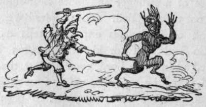

Note On A Passage In Sir Walter Scott's Demonology
Description
This section is from the book "Letters On Demonology And Witchcraft", by Walter Scott. Also available from Amazon: Letters On Demonology & Witchcraft.
Note On A Passage In Sir Walter Scott's Demonology
The two verses referred to by Sir Walter in Deuteronomy evidently contain a summary of the Jewish offences in the cases of Witchcraft and Wizzardism, of which divination, xjt. predicting or prognosticating, is laid down as the genus, and of which the other titles constitute the species. The versions of them in the English Bible are exceedingly loose and indefinite, and a stricter explanation will be found to add great strength to the position laid down by Sir Walter, and which, no doubt, contains the true exposition of the nature of the guilt which attached to the exercisers of these arts among the Jews. How strong a tendency this people ever had to practices of the kind, may be inferred from the fact, that among the six fanciful qualities which the later Talmudists have reckoned up as necessary to constitute a member of the great national council, the Sanhedrim, two were—a perfect knowledge of seventy languages, and some acquaintance with the arts of magic. But to come to the various diviners comprehended in the verses above, they consist of the following :—
Gnoneetz (according to Parkhurst's Lexicon), a cloud-monger, a diviner by looking up to the clouds. Gesenius, who doubts whether such a kind of augury existed in ancient times, prefers the explanation of ' an enchanter, a bewitcher by the eye :' English version, an observer of times.
Nacheesh, an augur, a diviner of futurities by some natural phenomena, as the flight of birds, the bowels of animals, etc. Gesenius confines it to the auguries derived from the observation of serpents, a kind of prediction which, under the name of òøíõµαντεία, was not uncommon among the ancients : English version, an enchanter. The root of this word signifies ' to foretell.' according to Gesenius ; according to Parkhurst, ' to look, search, or enquire accurately.' The substantive, derived from the first meaning, appears to have been occasionally used in a good sense, and will serve to explain a passage in Numbers xxiv. I. This passage should be rendered, not as our present version has it, ' Balaam went, not as at other times, to seek for enchantments,' but, then he went not, as in the former time, to meet the omens; this meeting of the omens, as is obvious from ch. xxii. 3, 15, was, in fact, nothing more nor less than an enquiry at the mouth of the Lord, as to the course which he was to pursue on the present occasion. That course being now determined, he ' sets his face towards the wilderness,' where Israel was encamped, and the rest of the narrative becomes sufficiently clear. By the 23rd verse, 'surely there is no enchantment against Jacob, neither is there any divination against Israel,' I apprehend is meant that the usual arts practised for diving into the future histories of nations would be of no avail on this occasion, and the declaration appears to have been made for the purpose of bringing a mightier Being, if we may so express ourselves, upon the stage ; and accordingly, a few verses afterwards, ' the Spirit of God,' the only true agent of the prophetic power recognized in the Holy Writings, comes upon the enraptured seer, and he breaks out into that magnificent prediction of the future destinies of the House of Israel, which he has clothed with all the glowing images and diction of eastern poetry. The second sense will enable us to give a different version of two passages in Genesis, xliv. 5 and 15. A mode of ' divining by a cup' did exist among the Egyptians,— (there was no possible mode of attempting to pry into futurity which I believe they did not practise,)—as may be seen from Burder's Oriental Customs, p. 25 and if the butler of Joseph was in his master's secret, there might be a dramatic propriety in putting into their joint mouths the language of a diviner, with which character the imaginations of the Egyptians would naturally have invested Joseph after the success of his wonderful predictions. But the passages are certainly susceptible of the much easier and simpler interpretation which Parkhurst has given them, and who, I believe, may safely be trusted, when his etymological researches were not influenced by the attachment which he appears to have felt for the Hutchinsonian school, and which often rendered his own opinions at once fanciful and uncertain, v. 5. ' Is not this the cup in which my Lord drinketh?'—and he would surely search accurately for it. v. 15. 1 Wot he not that such a man as I would search carefully or accurately ?'
Chaushaph, a user of pharmaceutic enchantments ; an applier of drugs, whether vegetable, mineral, or animal, to magical purposes : English version, a witch. To this head, most probably, is to be referred the witchcraft (φαξμαχεία) of St. Paul: Galat. v. 20. In the Apocalypse, ix. 21, and xviii. 23, the same word, φαξμαχεία, is, according to Schleusner, used in a secondary sense, and applies to the cunning arts and frauds which men use to deceive each other, or by which men are drawn from the true religion into error. The passage coupling witchcraft with ingratitude I cannot at the moment refer to; but I suspect that the apostle uses a different word on the occasion.
Chobeer cheber, a joiner of words together for the purposes of incantation ; a user of spells or enchantments : English version, a charmer. Sir Walter's readers have, for many a long year, had ample reason to acknowledge that this breed is not yet extinct !
Yidagnoni is explained by the Lexicons, in accordance with the English version, a wizzard—a cunning man. It appears to me to have emphatically marked the man who presumed to pry ' into the secret things which belong unto the Almighty ,' and, in its radical signification, is connected with that fatal tree which, as appointed by the Deity for the moral cause of teaching the knowledge of good and evil, has borne its appellation accordingly. The word is frequently rendered by the LXX, γνώστης, a knowing one; and without stretching a point it may be applied, in modern times, to that knowledge which, when unaccompanied by religious instruction, so often becomes a curse to the possessor himself as well as to others.
Doreesh hel hameetheim, an inquirer at the dead : English version, a necromancer.
But the most important term, ' the consulter with familiar spirits,' remains yet to be considered. The sacred writers use two words on these occasions : the singular noun hob, and, according as the sex of the person is designated, the plurals hoboth and hobath. By the latter terms are signified, the persons who had what we term the familiar spirit in them, or who were masters or mistresses of the evil spirit. ' On an attentive review,' says the learned author of the Hebrew and English Lexicon, to whom I have already so often referred, 11 think the singular hob must, in the following texts, Lev. xx. 27, Deut. xviii. II, I Sam. xxviii. 7, 8, denote the evil spirit himself, the πνεΰμα πυθώνος, the " spirit of divination," as St. Luke calls him, Acts xvi. 16 ; and that it may so signify in every other passage where it occurs,—namely, 2 Kings xxi. 6, I Chron. x. 13 ; 2 Chron. xxxiii. 6 ; Isa. xxix. 4.' Bate, a very learned Hebraist, derives the words from a root, which signifies, to be willing; and observes, 'that this is a very proper word for a familiar spirit, from the affection he was supposed to have taken to the person he attended.' Parkhurst himself inclines to think that it is derived from a verb signifying to swell, to heave, to distend; and if this derivation is correct, it would evince a remarkable instance of conformity with the inflated appearance under which the old Pythonesses were accustomed to deliver their oracular responses, and of which so magnificent a description has been left us by Virgil.
From these explanations it appears pretty obvious, that Sir "Walter's theory is perfectly correct, that the sin of witchcraft or wizzardism, among the Jews, consisted in its being a direct intrusion upon the task of the real prophet, by whom it pleased the Deity in those times to make his will known, and which therefore constituted, under the Theocracy, a crime equivalent to high treason, and was accordingly punishable with death. Two very remarkable verses connected with this view of the subject, appear, however, to have escaped Sir Walter. By his dealings with the Witch of Endor, the Monarch of Israel had evidently incurred the penalty attached to this high species of guilt; and though the secrecy of the transaction in the first instance, and his station in the second, might have saved him from the consequences of human interference, the vengeance of a stronger and more clear-sighted tribunal was not to be eluded. The inspired writer of the first book of Chronicles expressly tells us (x. 13, 14): 'So Saul died for his transgression which he committed against the Lord, even against the word of the Lord, which he kept not, and also for asking counsel of one that had a familiar spirit to inquire of it, and inquired not of the Lord ; therefore, he slew him, and turned the kingdom unto David the son of Jesse.' With that solemn and emphatic chapter which contains the actual interview between Saul and the Endor witch, I presume not to meddle ; but I may be permitted to observe, that the word which is translated gods, in v. 13, is, in many passages of our authorized version, rendered judges (among others, Exod. xxi. 6; xxii. 8; I Sam. ii. 25 : and the same meaning, perhaps, had better have been given to the present passage, and also to Exod. xxii. 28 : ' Thou shalt not revile the judges (English version, gods), nor curse the ruler of thy people.' It is not improbable, also, that the mantle in which the spectre appeared was that which belonged to his living office as a judge or prophet; (it bears, at all events, the same name as that which Samuel wore, and of which the skirt was rent by Saul, in the agony of his mind at his falling fortunes ;) and hence, perhaps, Saul's ready recognition of the departed seer, by the descriptions given by the Pythoness.

Continue to: